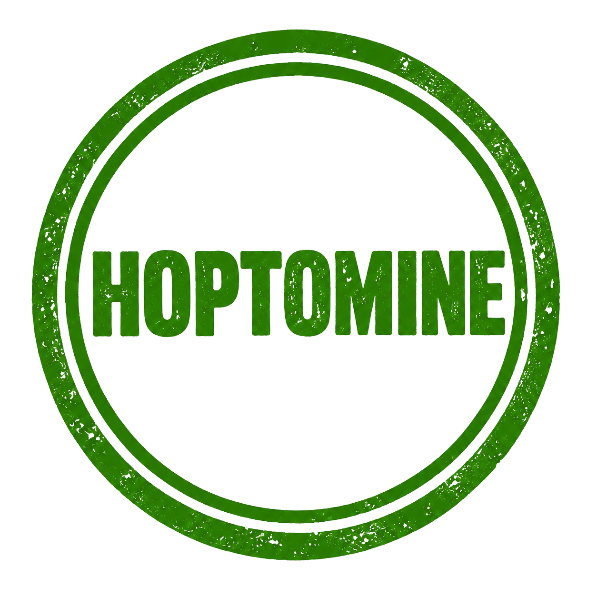

Полная история проекта HOPTOMINE
Наш проект начал свою славную и насыщенную историю ещё в далёком августе 2021 года. За прошедшие почти 5 лет непрерывной работы - вплоть до июля 2026 года - HOPTOMINE прошёл поистине монументальный и уникальный путь развития, ставший яркой страницей в сообществе Minecraft.
За всё это время проект прошёл через пять поколений. Текущая итерация являлась пятой по счёту и заслуженно считалась самым успешным проектом за всю историю. Каждые из предыдущих четырёх проектов были важными ступенями, ценным опытом и этапами, которые вели нас к этому триумфу, формируя неповторимый игровой опыт.
У проекта была невероятно богатая история, наполненная событиями, победами и тёплыми моментами. Наша преданная команда сотрудников, насчитывающая около 70 человек, неустанно трудилась день и ночь, вкладывая все свои силы в то, чтобы улучшать проект во всех аспектах, развивать уникальные системы и поддерживать комфортную атмосферу.
К июню 2026 года проект находился в абсолютно идеальном, всесторонне подготовленном состоянии, полностью готовый к грандиозному масштабному глобальному запуску, намеченному на июль 2026 года. Всё было отточено до мелочей, однако судьба распорядилась иначе: команда столкнулась с критическими техническими проблемами с ядром проекта. Из-за этих непреодолимых архитектурных трудностей проект физически не смог бы корректно обновляться, развиваться и функционировать в будущем.
Владелец проекта официально подтверждает, что в феврале 2027 года HOPTOMINE полностью прекратит своё существование. В этот момент абсолютно весь сайт, все серверные мощности и все накопленные данные будут полностью, безвозвратно и глобально уничтожены.
Мы хотим выразить глубочайшую признательность нашей замечательной команде сотрудников HOPTOMINE и каждому игроку, кто был с нами. Владелец искренне рад тем тёплым воспоминаниям, которые оставил этот проект, и признается, что у него просто нет слов, чтобы в полной мере отблагодарить всех за поддержку, верность и за то, что разделяли с нами этот долгий и удивительный путь. Желаем огромной удачи всем сотрудникам и каждому игроку в их дальнейших начинаниях!
 Внимание!
Внимание!